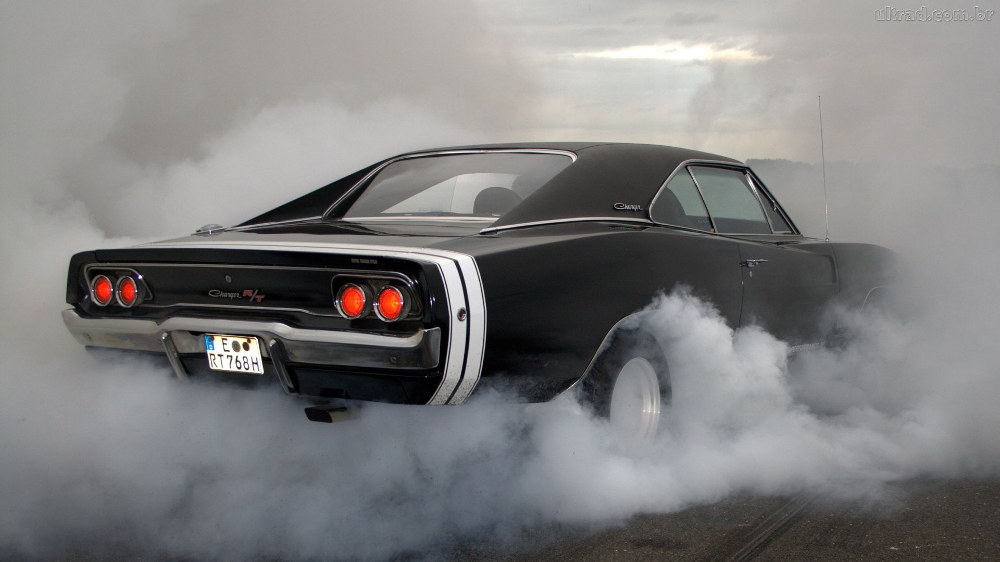

AUTOS CLASSICOS

PLYMOUTH
CHARGER R/T
1951 MERCURY
ACCESORIOS
SIEMPRE VERAS LOS MEJORES AUTOS
PLYMOUTH
INICIO
El Plymouth Barracuda es un automóvil de dos puertas que fue fabricado por la Plymouth (división de la Chrysler) entre 1964 y 1974. La primera generación del Barracuda, un fastback cupé basado en el Plymouth Valiant, tenía un vidrio distintivo envolvente y se disponía de 1964-1966.
Automóvil deportivo / Muscle car
CHARGER R/T
INICIO
El Dodge Charger R/T fue un automóvil de tamaño intermedio que fue producido por el fabricante Chrysler y vendido bajo la división Dodge. Estaba basado en la plataforma B de Chrysler, misma que compartía con el Coronet y con los Plymouth medianos como el Satellite y el Belvedere.
Auto Deportivo / Muscle Car
1951 MERCURY
INICIO
El Mercury 1951 fue el primer modelo de la Ford Motor Compania Mercurio corso y se produce a partir del 1939 a través de los 1951 años modelo. Era el único modelo ofrecido por Mercurio hasta la marca que produce varias series en el año modelo 1952 de partida, momento en el que se dejó caer como una designación del modelo.
Classico / Deportivo
ACCESORIO
INICIO
En esta secion podras ver algunos accesorios para automoviles clasicos como CHARGER, MERCURY, PLYMOUTH, etc. podras encontrar faros, rines, alerones, refaciones, etc.
NUESTROS ACCESORION SON DE ALTA CALIDAD